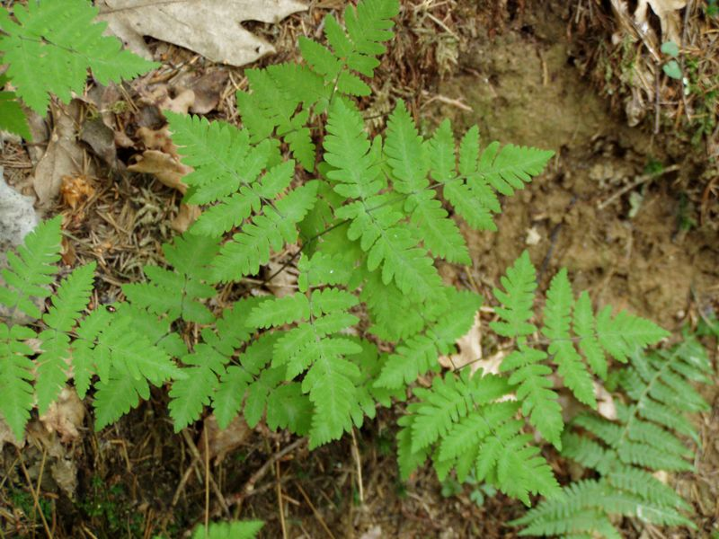

Eichenfarn
Gymnocarpium dryopteris
Nur vereinzelt wagt sich der in den umliegenden Mischwäldern heimische Eichenfarn auch ins Ried. Die bis zu 40 cm hohen Wedel sind im oberen Teil abgeknickt.
Nur vereinzelt wagt sich der in den umliegenden Mischwäldern heimische Eichenfarn auch ins Ried. Die bis zu 40 cm hohen Wedel sind im oberen Teil abgeknickt.